Лекції-дискусії
Глибокі знання та живі розмови про важливе.
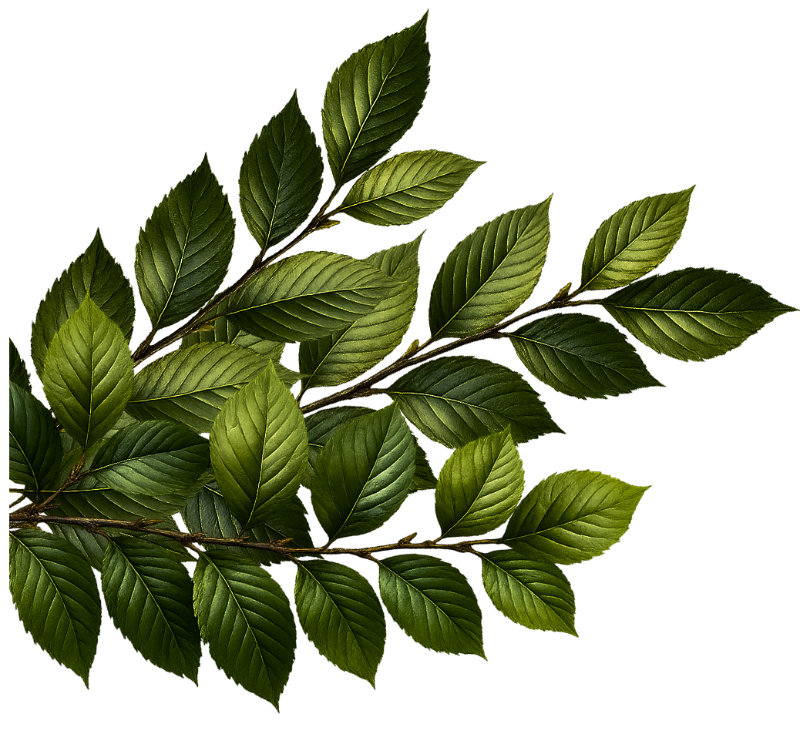
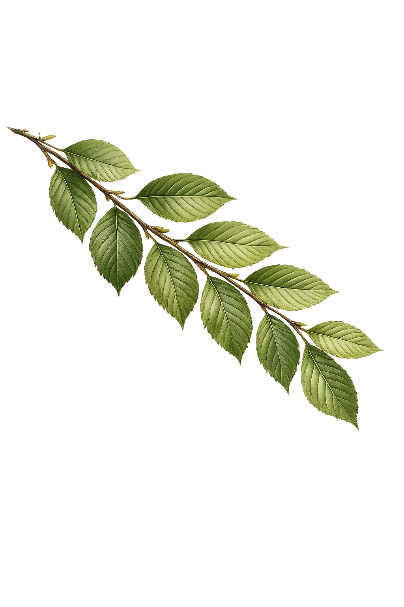
5-рівневий табір особистісного розвитку
Запрошуємо тебе на 5-рівневий табір особистісного розвитку. Разом досліджуємо історію України і вивчаємо себе.
Вчимося розуміти важливі соціальні явища та мислити самостійно, розвиваємо соціальний інтелект.
На вас чекають лекції-дискусії на теми психології, історії України, історії української мови та літератури, місце України у світовій історії. Здобуваємо знання і навчики, які є ґрунтом для побудови щасливої нації. Твої знання і особистий розвиток - це твоя зброя проти систем, які ламають людей.
Глибокі знання та живі розмови про важливе.
Нові друзі, підтримка і справжнє спілкування.
Характер, мислення, дисципліна і цілі.
Історія, мова, віра та любов до України.
10-15 липня 2026, 14-18 р.
Чому люди виростають з бажанням руйнувати?
Чому світ навколо - це відображення нас самих?
Руйнівник vs Творець
Як бути творцем і автором свого життя.
Риси психологічно зрілої особистості.
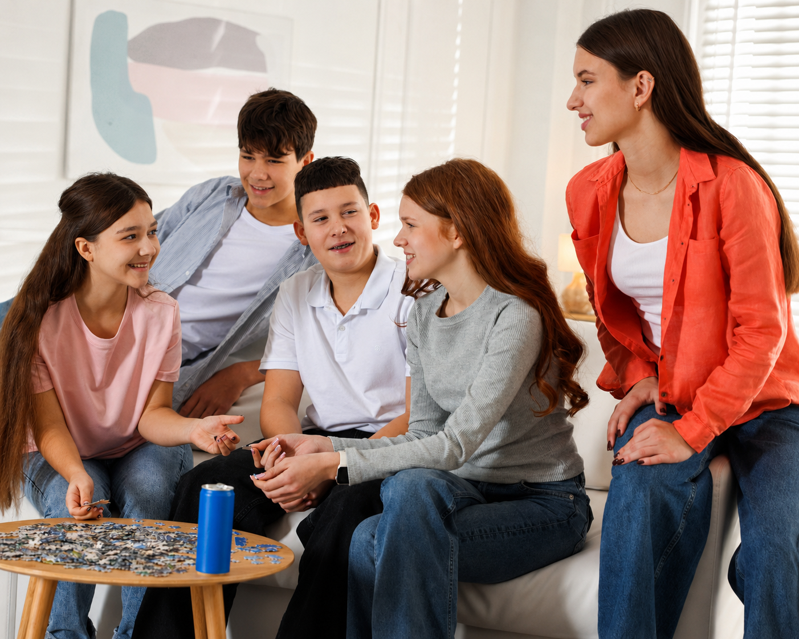
Чесність, автентичність - як бути собою і жити по своїй природі.
Християнський погляд на гідність людини.
Навички комунікації - секрет здорового спілкування.
В чому цінність конфлікту?
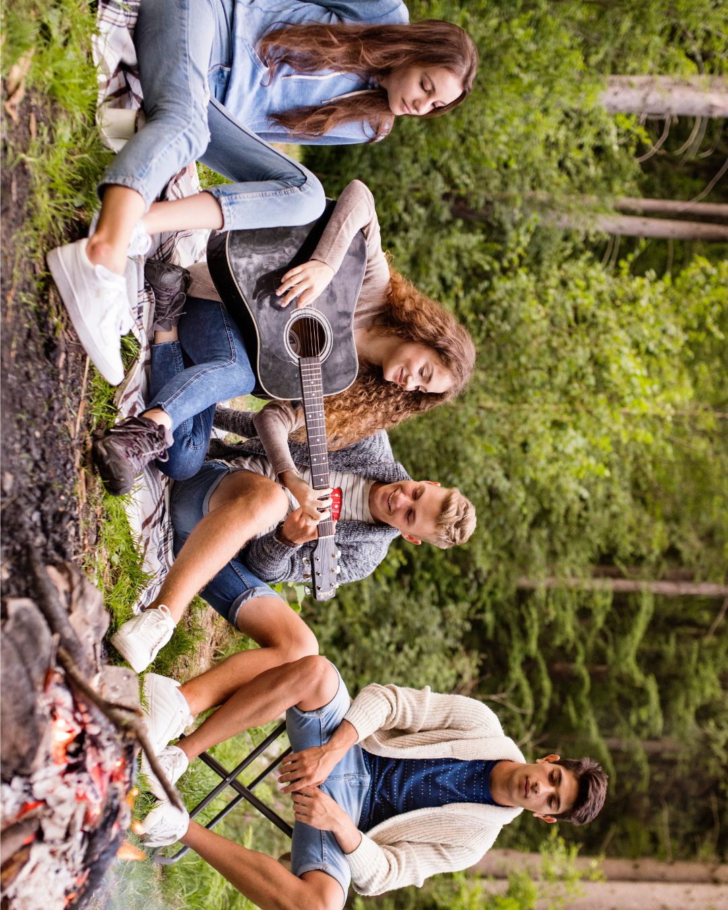
Як працює пропаганда?
Чому люди починають вірити маніпуляціям і як інформація впливає на наші емоції та мислення? На лекції розберемо механізми пропаганди: від історичних прикладів до сучасних соцмереж, алгоритмів і медія. Навчимося помічати маніпуляції, критично мислити та не ставати жертвою маніпуляцій.
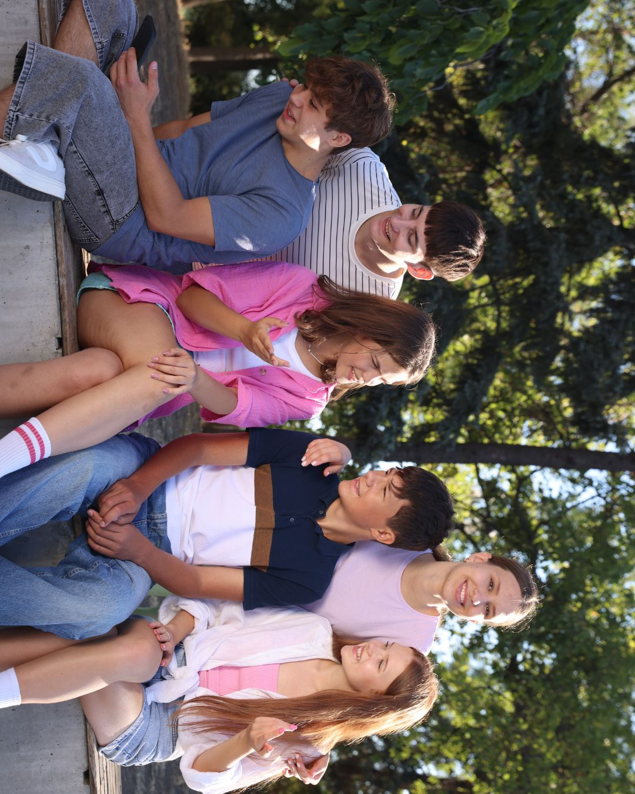
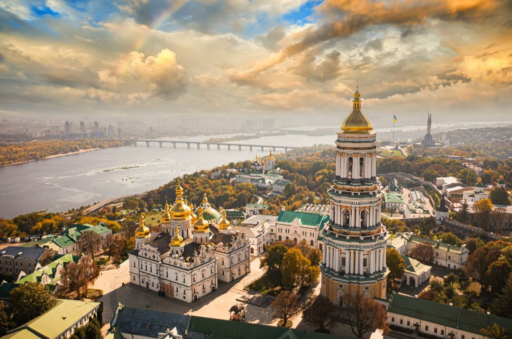
01
Пояснюємо, чому Україна зі століття в століття опиняється в епіцентрі світових воєн, а політичні хижаки завжди мають на нашу землю плани. Зазирнемо в сторінки нашої істинно величної минувшини.
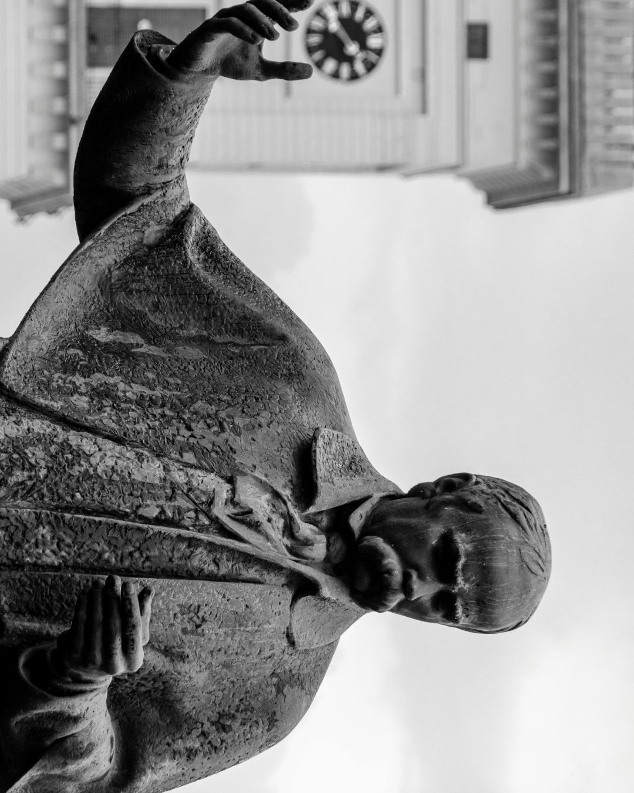
02
Як українська мова описує світ навколо та чому це важливо розуміти.
Чому говорити українською - престижно (спойлер: не тільки тому, що це рідна мова)
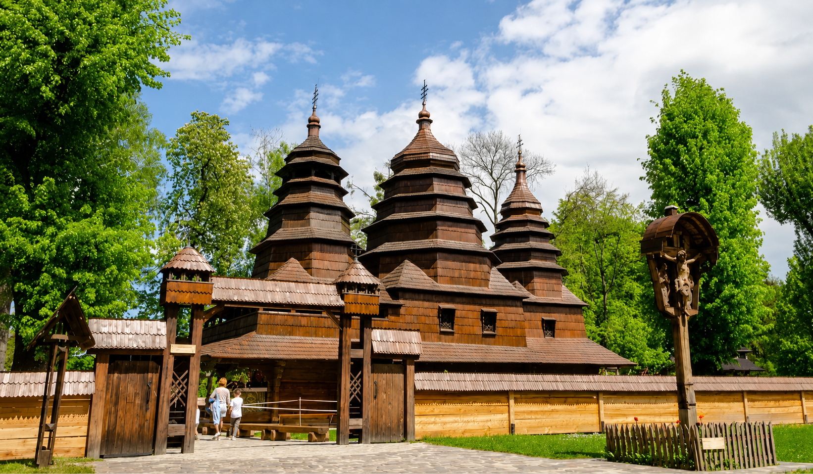
03
Що таке український націоналізм та чим відрізняється від націоналізмів інших націй.
Спростуємо брехню про тотожність націоналізму та нацизму, про те, що нації - це нещодавнє явище, а не відвічне.
З'ясуємо, чому Україна має бути національною християнською державою, щоб вистояти у теперішній війні та процвітати в майбутньому.
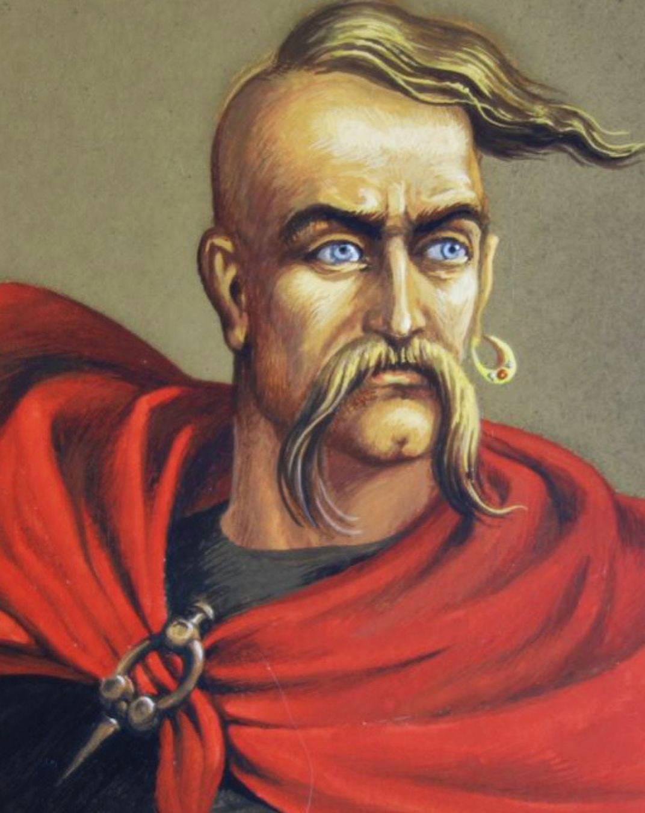
04
Українці століттями робили відкриття, створювали мистецтво, змінювали науку та історію світу. Поговоримо про видатних українців у науці, медицині, культурі, техніці та політиці. Чому їхні досягнення часто привласнювали инші держави.
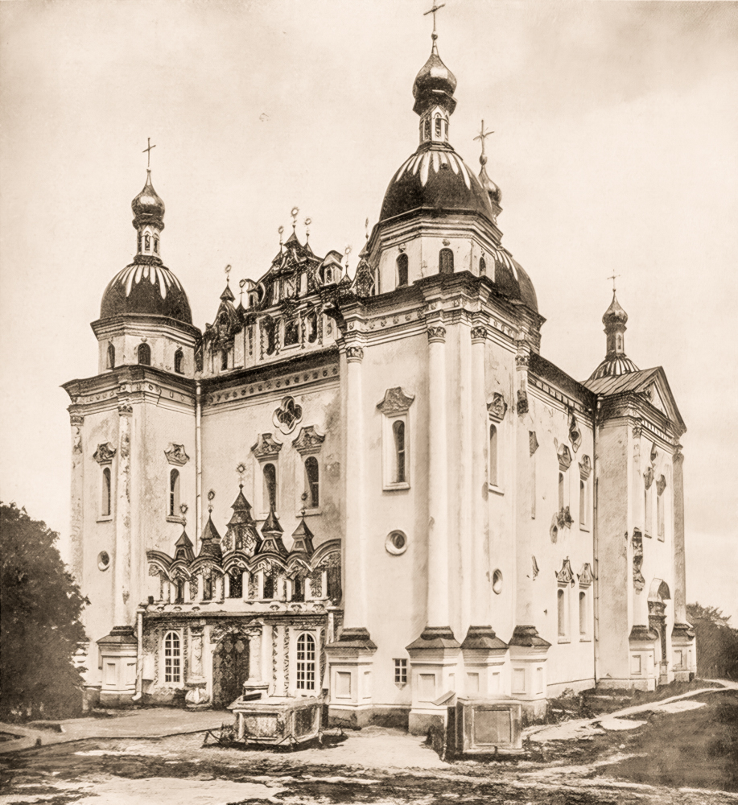
05
Чому українці часто недооцінюють себе та своє? Поговоримо про те, як імперії, пропаганда та культура впливали на формування комплексу меншовартости в українському суспільстві. Як це проявляється сьогодні, чому це небезпечно та як будувати здорову національну й особисту гідність.
Сіль землі — це простір, де підлітки вчаться розуміти себе, світ і відповідальність за майбутнє України.
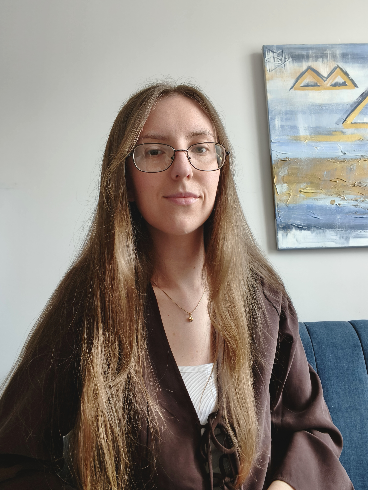
(Вінницький державний педагогічний університет ім. М. Коцюбинського)
Працює репетитором з української та англійської мов. Захоплюється психологією, саморозвитком та пізнанням світу.
Найкращий відпочинок: їхати на авто по гірській місцевості під улюблену музику.
(Волинський національний університет ім. Лесі Українки)
Працює в царині реклами та веде просвітницький блог. Любить книги та Україну. Найкраще дозвілля: неквапливо пити каву на сонячній терасі та читати.
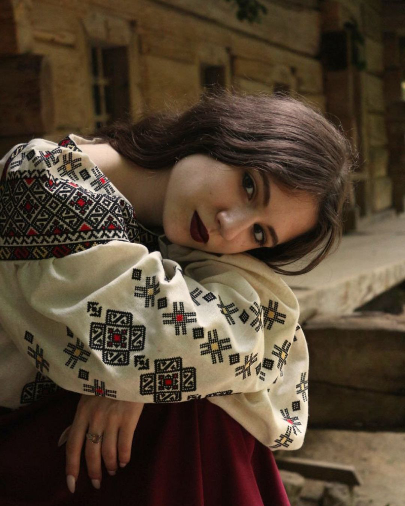
Працює репетитором підготовки до НМТ з української мови, літератури, історії.
Захоплюється читанням, подорожами, любить провести вільний час у колі друзів за цікавими розмовами.

Працює в гештальт-підході, проводить індивідуальні консультації, групові проєкти та навчається на супервізорку і викладачку гештальт-терапії.
Захоплюється творчістю, мистецтвом, сплавами та їздою на мотоциклі. Любить подорожі, походи в гори та організацію ретритів.
Дружелюбна атмосфера, цікаві знайомства, відпочинок у комфортному будиночку в сосновому лісі, лекції-дискусії, кіновечори, українська вечірка. У вільний час можна відпочити у номері, посидіти в кав'ярні або пограти ігри (бадмінтон, фрісбі, Dixit).
ЗАПИСАТИСЬ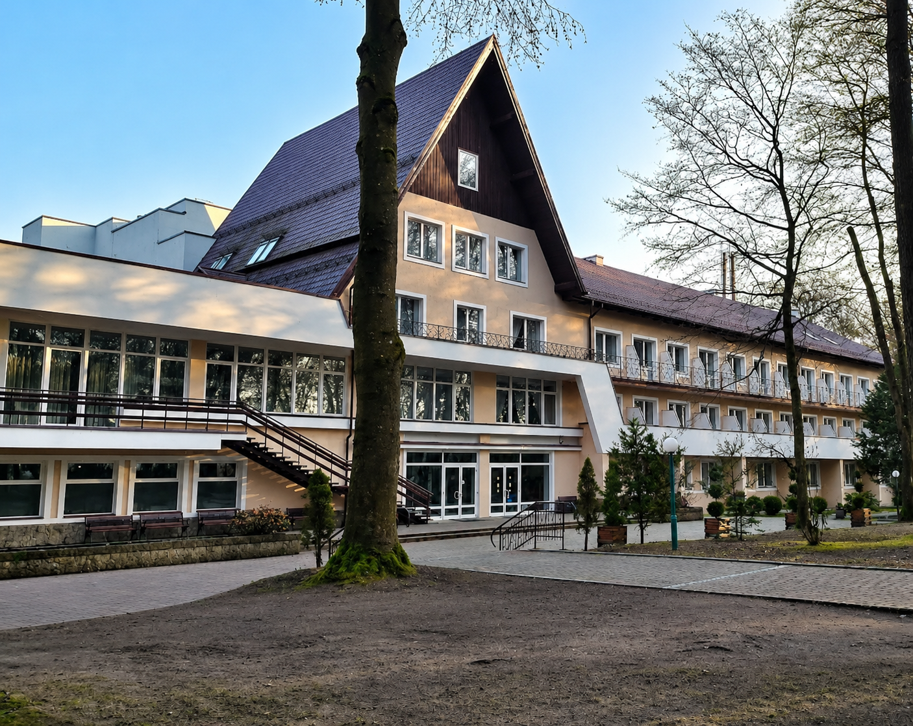
Залиш заявку — і ми зв’яжемося з тобою для уточнення деталей.
ЗАПИСАТИСЬ